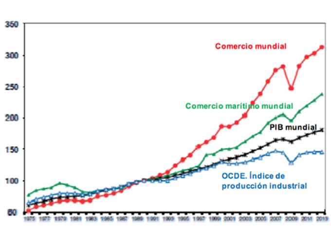
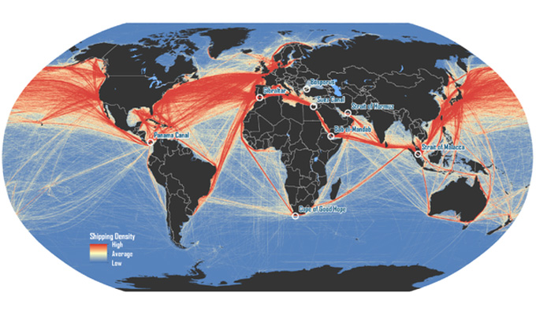

Desafíos para el Sistema Portuario Argentino
Mg. Mario Goicochea
1° Parte
El Sistema Portuario nacional se encuentra en un escenario de múltiples desafíos. Estos desafíos dependen
en gran medida de las decisiones que se tomen desde el poder ejecutivo y el legislativo (nacional y/o provincial).
Las cuestiones más importantes a abordar al encarar estos desafíos pueden enumerarse en:
Primer Desafío: reforzar el papel del Estado
En el sistema portuario argentino hubo un hito en la década del 90’, con la sanción de la “Ley de Puertos”,
generando un cambio radical en el sistema portuario, que pasó de un sistema de gobernanza centralizado por
el Estado nacional, a un sistema de gobernanza público o privado, pero con regulación estatal a través de
la autoridad de aplicación nacional.
En esta Ley encontramos varias definiciones importantes (solo vamos a considerar las que importan para análisis):
1. DICTA LA LEY NACIONAL DEL SISTEMA PORTUARIO: “Todos los aspectos vinculados a la habilitación, administración
y operación de los puertos estatales y particulares existentes o a crearse en el territorio de la República, se
igen por la presente ley”.
2. DEFINICION DE PUERTO: “Denomínase puertos a los ámbitos acuáticos y terrestres naturales o artificiales e
instalaciones fijas aptos para las maniobras de fondeo, atraque y desatraque y permanencia en buques o artefactos
navales para efectuar operaciones de transferencia de cargas entre los modos de transportes acuático y terrestre
o embarque y desembarque de pasajeros, y demás servicios que puedan ser prestados a los buques o artefactos navales,
pasajeros y cargas.”.
3. HABILITACION DE UN PUERTO: DE LOS PUERTOS EXISTENTES O A CREARSE: Requieren habilitación del Estado nacional
todos los puertos comerciales o industriales que involucren al comercio internacional o interprovincial.
4. CLASIFICA TIPO DE PUERTOS: Los puertos se clasificarán en:
1) Por titularidad del inmueble: Nacionales, Provinciales, Municipales, Particulares.
2) Por su uso: Uso público y Uso privado.
3) Por su destino, e independientemente de la titularidad del dominio del inmueble y de su uso: Comerciales, Industriales,
Recreativos en general.
Dicha Ley determinó como funcionaría el sistema portuario argentino. Fue un quiebre y nuestro país se
sumó a la ola que arrasaba con las gestiones públicas y trasladaba sus operaciones al sector privado;
dejando para el Estado la función de planificación, control y regulación.
Podemos estar de acuerdo o no en estas definiciones o líneas ideológicas, pero coincidimos que en 1992
se definió un nuevo modelo de gestión, a partir del cual se incorporó el ámbito privado al sector
operativo portuario.
Esta ola también alcanzó a la gestión del tramo más importante de la Hidrovía Paraná-Paraguay, otorgando
mediante licitación pública internacional al sector privado la modernización, ampliación, operación y
mantenimiento del sistema de señalización y tareas de redragado y mantenimiento de la Vía Navegable Troncal.
Este nuevo modelo generó la creación de varios puertos privados en las orillas del río Paraná, permitió profundizar
la vía navegable fluvial (en sus más de 25 años de gestión privada). Varias terminales graneleras pasaron a gestión
privada y se crearon puertos públicos autónomos, como Bahía Blanca y Quequén, entre otros. El movimiento de toneladas
exportadas, aumentó de 30 millones a más de 80 M), con la formación del núcleo industrial sojero más grande del mundo.
Podemos asegurar que el sector privado cumplió, generando un importante crecimiento del negocio y operando con eficiencia.
Pero el sector público se fue retirando de la gestión portuaria. La mayoría de los gobiernos no le dieron la debida
importancia a la función del Estado en el sistema portuario.
Entonces, el primer desafío es rescatar que ¨el Estado debe cumplir adecuadamente el papel que le toca en el sistema
Portuario Argentino, controlar, regular y planificar (estos tres …como mínimo) ¨.
Nota: No es el objetivo de este documento determinar cómo reforzar el papel del estado y hasta donde debe llegar,
pero por lo pronto debe aumentar…los detalles los dejos para una próxima ocasión.
Segundo desafío: Estrategia y Planificación
En este punto el gran desafío es aceptar en primer lugar que no existe planificación a nivel nacional en el sistema portuario
(y me animaría a asegurar que en muchos puertos tampoco), para posteriormente poder desarrollar la tarea de establecer una
estrategia operativa y una planificación a largo plazo para el sistema portuario argentino (y para cada autoridad portuaria).
Solo contando con toda la información anterior y tras un profundo proceso de reflexión de las personas que conducen o lideran,
es posible para una organización identificar donde sería deseable y posible posicionarse (Visión) en un horizonte temporal de
medio plazo. Cuál será el mejor y más recomendable camino que podrá elegirse para llegar a ese punto (líneas o grandes temas
estratégicos). Manteniendo siempre presente cual es la auténtica razón de ser de la organización (Misión) y que retos concretos
se pretenden ir alcanzando a lo largo del camino que se prevé recorrer (Objetivos Estratégicos). Y debemos responder a preguntas
fundamentales: ¿Qué puerto somos? y ¿Qué puerto queremos ser?
En este documento no vamos a avanzar más de los enunciados, pero ¿no les parece que es necesario tener una estrategia?
Nota: cualquier organización que carece de planificación esta destinada
al fracaso, y por ello es fundamental patear el tablero y comenzar a hacerlo.
2° Parte
Tercer Desafío: Control y CMI
Sin embargo, un buen proceso de diseño o planeamiento estratégico no asegura necesariamente el éxito, es preciso además
llevar a cabo una correcta ejecución, seguimiento y control de los planes definidos.
Es por este motivo que el proceso de gestión estratégica cobra especial importancia para conseguir la correcta ejecución
de la estrategia definida.
Sera necesario establecer indicadores de resultados que nos permitan ir midiendo nuestro desempeño en los principales
procesos de actividad. Igualmente, el establecimiento, seguimiento y control de los principales planes directores
operativos de la organización y de los presupuestos de inversión y gasto establecidos, nos permitirán disponer de
información relevante para la toma de decisiones, actualizada con la debida continuidad.
Es necesario relacionar a la estrategia con la ejecución… y para ello aplicaremos el Cuadro de Mando Integral (CMI).
El CMI nace para relacionar de manera definitiva la estrategia y su ejecución, cumpliendo indicadores y objetivos,
que midan de forma efectiva el grado de avance de los planes de acción definidos en la fase de diseño estratégico.
El objetivo del CMI es dar a las empresas u organizaciones elementos para medir su éxito. El principio que lo
sustenta es: "No se puede controlar lo que no se puede medir".
El CMI transforma la visión y la estrategia a largo plazo en objetivos e indicadores, con un carácter más operativo
y organizados en diferentes perspectivas:
• Financiera o valor.
• Clientes.
• Procesos Internos
• Formación y Crecimiento o Estructura.
En pocas palabras, el CMI permite a la organización medir los resultados financieros, satisfacción del cliente,
operaciones y la capacidad de la organización para producir y ser competitiva.
Nota: de planificar, a la estrategia hay que controlarla y
medirla para saber si se esta cumpliendo y si es necesario corregirla.
Cuarto desafío: Adaptar y mejorar el sistema portuario, Una
Nueva Ley de Puertos.
Tenemos un diseño del sistema actual que se materializó en el 1992, es decir hace mas de treinta años. En todo
este tiempo se han generado cambios notables en la tecnología, en los sistema de gestión de las organizaciones
públicas y privadas, cambios climáticos importantes (la bajante del Paraná), la pandemia (dos años casi aislados
del mundo), cambios de gobiernos en el medio, buques mas grandes y mas rápidos, terminales portuarias que en ese
periodo han desarrollado sistemas más rápidos de operación; en fin, podemos seguir enumerando cambios en todas
las operaciones portuarias locales y globales, pero en la Argentina seguimos con la misma ley de puertos.
Será que el sistema portuario no merece o no tiene la importancia necesaria para que nos sentemos a debatir
como mejoramos una ley de hace 30 años?
Los puertos deben adaptarse a los nuevos buques, los buques se adaptan al movimiento de mercadería, la mercadería
se relaciona directamente con el comercio internacional; en definitiva, los puertos se adaptan al comercio internacional.
En la actualidad, el volumen del comercio mundial es aproximadamente 40 veces el registrado en los primeros días del
GATT (un crecimiento del 4.100% entre 1950 y 2020). Los valores del comercio mundial se han multiplicado casi por 300
(274) respecto de los niveles de 1950.
Los gráficos a continuación muestran un considerable incremento del comercio desde el establecimiento de la OMC en 1995.
De manera resumida, puedo observar la relación entre la evolución del comercio internacional y el nivel de vida (asociado al PBI del país).
EVOLUCION DEL COMERCIO MUNDIAL, PBI, COMERCIO MARITIMO

FLUJO DE TRAFICOS DE LINEAS MARITIMAS

Contar con un sistema portuario bien definido y diseñado, ayuda a mejorar la logística y colabora con el aumento de la producción
y el comercio, fomentando inversiones y puestos de trabajo. En definitiva, un sistema portuario eficiente genera trabajo y aumenta
el nivel de vida.
Por lo que el cuarto desafío es analizar y proponer las mejoras que deben ser
incorporadas a la “Ley de Puertos” del año 1992, para adaptar a las nuevas realidades y a los avances tecnológicos.
CONCLUSIONES
He mencionado cuatro desafíos que considero deberían ser analizados, aunque debo decirles que hay mucho más para decir sobre
nuestro sistema portuario argentino, pero empecemos de a poco. Si tenemos la valentía para reconocer lo que está mal, seguramente
vamos a poder pensar en las mejoras que debemos incorporar. Aunque no todo es malo, ya que en estos 30 años el movimiento de
mercadería por los puertos argentinos ha crecido notoriamente, pero tenemos mucho para mejorar.
Por ello, debemos poner en marcha las acciones necesarias para tener un sistema portuario y por consecuencia los puertos lo más eficientes
posible; no tenemos que seguir sin realizar los cambios que son necesarios, debemos ponernos en marcha y diseñar el futuro que
consideramos que el sistema portuario debe tener para dentro de 25 años.
Mario GOICOCHEA >
Ingeniero Electrico con un Master en Derecho, Economía y Admnistración de Servicios Públicos de la
Universidad del Salvador, Carlos III (Madrid, España). Magister en Administración de Negocios
y Magister en Planificación y Gestión e Intermodalidad portuaria. En la actualidad se desempeña como Jefe de Asesores
de la Administración General de Puertos. Además es Veterano de Malvinas.
>> Linkedin Mario Goicochea